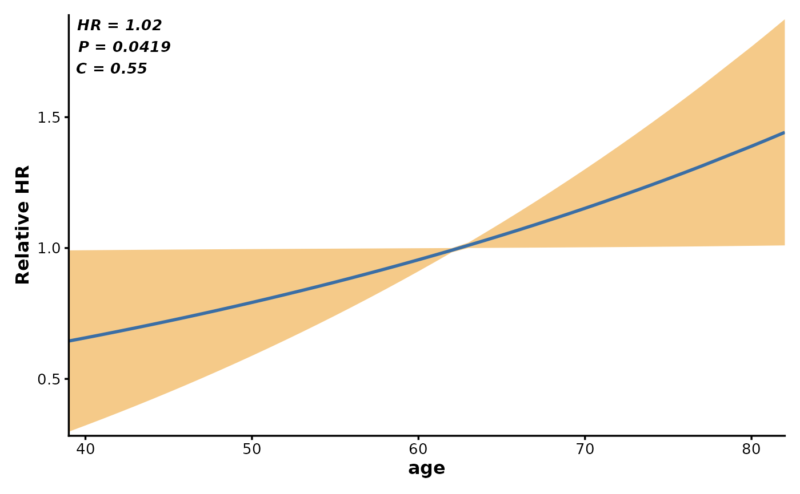
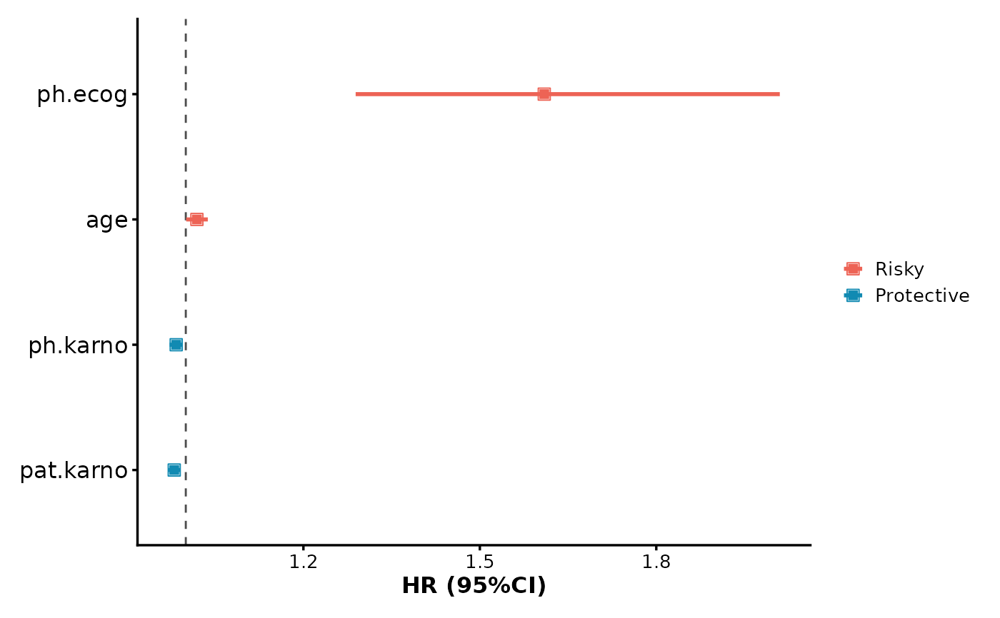
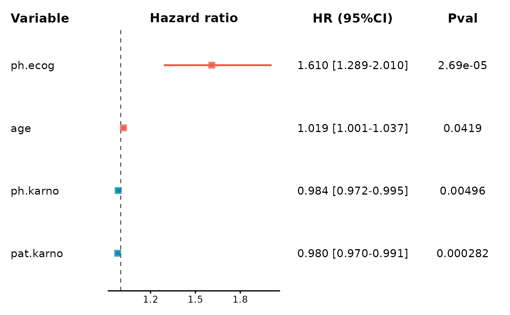

Create publication-ready Cox proportional-hazards model visualizations including hazard ratio curves, forest plots (simple and detailed), with support for parallel computation and multiple visualization types.
Usage
CoxPlot(
data,
time = "time",
event = "event",
vars = NULL,
var = NULL,
plot_type = c("curve", "forest", "forest2"),
scale = FALSE,
nonExpression_ratio = 1,
parallel = FALSE,
n_cores = parallel::detectCores() - 6,
ribbon_color = "#EFA63A",
ribbon_alpha = 0.6,
line_color = "#3a6ea5",
line_type = 1,
line_width = 1,
show_cindex = TRUE,
text_size = 3.5,
text_digit = 3,
text_face = "bold.italic",
point_colors = c("#ED6355", "#118ab2", "grey"),
point_size = 2,
point_border_width = 0.5,
point_border_size = 3,
line_colors = point_colors,
cutoff_vline_type = 2,
cutoff_vline_width = 0.5,
cutoff_vline_color = "grey30",
x_log10_scale = FALSE,
text_colors = "black",
digits = 3,
rel_width = c(0.8, 1.4, 1.2, 0.6),
split_by = NULL,
split_by_sep = "_",
facet_by = NULL,
facet_scales = "fixed",
facet_ncol = NULL,
facet_nrow = NULL,
facet_byrow = TRUE,
theme = "theme_ggforge",
theme_args = list(),
palette = "Paired",
palcolor = NULL,
alpha = 1,
aspect.ratio = NULL,
title = NULL,
subtitle = NULL,
xlab = NULL,
ylab = NULL,
legend.position = "bottom",
legend.direction = "horizontal",
combine = TRUE,
nrow = NULL,
ncol = NULL,
byrow = TRUE,
seed = 8525,
axes = NULL,
axis_titles = axes,
guides = NULL,
design = NULL,
...
)Arguments
- data
A data frame containing survival time, event status, and variables for Cox analysis.
- time
Column name for time variable (numeric).
- event
Column name for event status (1=event, 0=censored).
- vars
Column name(s) for variables to include in Cox regression. If NULL, uses
var.- var
Column name for single variable (used for curve plot or when vars is NULL).
- plot_type
Type of Cox plot: "curve" (hazard ratio curve), "forest" (simple forest plot), or "forest2" (detailed forest plot with HR and p-value columns).
- scale
Logical. Whether to standardize variables to z-scores before Cox regression.
- nonExpression_ratio
Numeric. Threshold ratio for filtering non-expressed genes. If the proportion of zero values exceeds this ratio, the variable will be filtered out.
- parallel
Logical. Whether to perform parallel computation for multiple variables.
- n_cores
Integer. Number of cores to use for parallel computation. Default is detectCores() - 6, minimum 1.
- ribbon_color
Color for confidence interval ribbon (curve plot).
- ribbon_alpha
Alpha transparency for ribbon (curve plot).
- line_color
Color for hazard ratio line (curve plot).
- line_type
Line type for hazard ratio curve.
- line_width
Line width for hazard ratio curve.
- show_cindex
Logical. Whether to show concordance index (Cindex) on plot.
- text_size
Size of annotation text.
- text_digit
Number of significant digits for text display.
- text_face
Font face for annotation text.
- point_colors
Vector of colors for points in forest plot. Default: c("#ED6355", "#118ab2", "grey") for Risky, Protective, NoSig.
- point_size
Size of points in forest plot.
- point_border_width
Border width of points.
- point_border_size
Size of point borders.
- line_colors
Colors for error bars in forest plot.
- cutoff_vline_type
Line type for cutoff vertical line (HR = 1).
- cutoff_vline_width
Line width for cutoff vertical line.
- cutoff_vline_color
Color for cutoff vertical line.
- x_log10_scale
Logical. Whether to use log10 scale for x-axis in forest plot.
- text_colors
Text colors in forest2 plot.
- digits
Number of significant digits for numeric display.
- rel_width
Relative widths of columns in forest2 plot. Default: c(0.8, 1.4, 1.2, 0.6) for Variable, HR plot, HR text, P-value.
- split_by
Column name(s) to split data into multiple plots
- split_by_sep
Separator when concatenating multiple split_by columns
- facet_by
Column name(s) for faceting the plot
- facet_scales
Scales for facets: "fixed", "free", "free_x", "free_y"
- facet_ncol
Number of columns in facet layout
- facet_nrow
Number of rows in facet layout
- facet_byrow
Fill facets by row (TRUE) or column (FALSE)
- theme
Theme name (string) or theme function
- theme_args
List of arguments passed to theme function
- palette
Color palette name
- palcolor
Custom colors for palette
- alpha
Transparency level (0-1)
- aspect.ratio
Aspect ratio of plot panel
- title
Plot title
- subtitle
Plot subtitle
- xlab
X-axis label
- ylab
Y-axis label
- legend.position
Legend position: "none", "left", "right", "bottom", "top"
- legend.direction
Legend direction: "horizontal" or "vertical"
- combine
Whether to combine split plots into one
- nrow
Number of rows when combining plots
- ncol
Number of columns when combining plots
- byrow
Fill combined plots by row
- seed
Random seed for reproducibility
- axes
How to handle axes in combined plots ("keep", "collect", "collect_x", "collect_y")
- axis_titles
How to handle axis titles in combined plots
- guides
How to handle guides in combined plots ("collect", "keep", "auto")
- design
Custom layout design for combined plots
Examples
# \donttest{
# Prepare example data
library(survival)
data(lung)
#> Warning: data set ‘lung’ not found
lung$status <- lung$status - 1 # Convert to 0/1
# Single variable hazard ratio curve
CoxPlot(
data = lung,
time = "time",
event = "status",
var = "age",
plot_type = "curve"
)
#> n_cores was < 1, reset to 1

# Multiple variables forest plot (simple)
CoxPlot(
data = lung,
time = "time",
event = "status",
vars = c("age", "ph.ecog", "ph.karno", "pat.karno"),
plot_type = "forest"
)
#> n_cores was < 1, reset to 1

# Multiple variables forest plot (detailed)
CoxPlot(
data = lung,
time = "time",
event = "status",
vars = c("age", "ph.ecog", "ph.karno", "pat.karno"),
plot_type = "forest2"
)
#> n_cores was < 1, reset to 1

# }